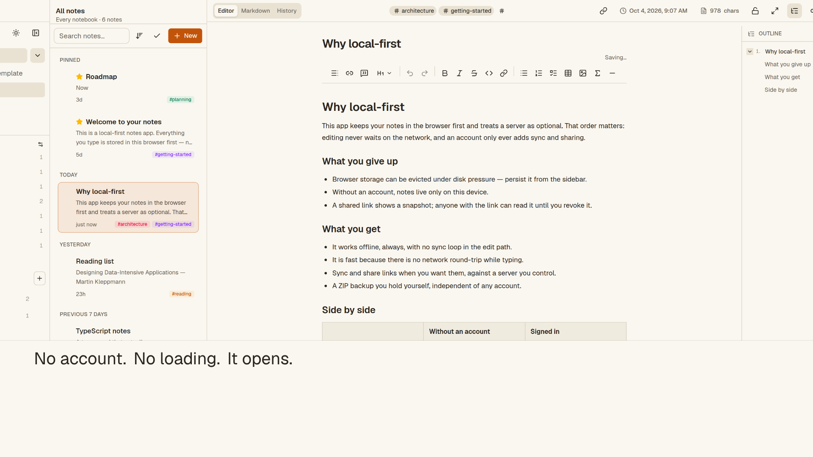

Nested notebooks
Unlimited depth, drag to re-parent, and cycle detection that refuses a move into its own subtree.
Local-first notes
A private notes and knowledge base that runs in your browser. No account, no analytics — and optional sync to a server you control.
Free · AGPL-3.0 · Works offline

What it does
Unlimited depth, drag to re-parent, and cycle detection that refuses a move into its own subtree.
TipTap with a raw Markdown view, tables, LaTeX, images, task lists, slash commands, and templates.
MiniSearch runs in a Web Worker and the index is persisted, so search is fast and offline.
Write [[Note Title]] to connect notes, with a backlinks panel and links that resolve later.
Export a ZIP with every note, attachment, and a lossless copy. Import from that ZIP or an Evernote ENEX file.
Point Sidenote at your own Supabase instance for sign-in, multi-device sync, and expiring share links.
Privacy
Local by default. Notes live in your browser's IndexedDB. With no server configured, the app makes no network request of its own and works with no network at all.
Optional sync, your server. Set two environment variables and Sidenote can sign in and sync against a Supabase instance you control. The hosted demo is local-first by design; sync is enabled only on deployments configured with their own Supabase.
No third parties. No analytics, advertising, crash reporting, or AI. The only outward edges are the server you configure and the share links you choose to create.
Self-host
The app is a single Next.js codebase. Without environment variables it is fully local; with a Supabase stack it gains accounts, sync, and share links.
npm ci
npm run devThen, if you want sync:
NEXT_PUBLIC_SUPABASE_URL=https://your-supabase.example.com
NEXT_PUBLIC_SUPABASE_ANON_KEY=your-anon-keyOpen the app and your first note is one click away. Export a ZIP whenever you want.
Open Sidenote